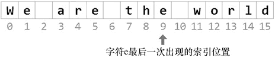

首页 > 编程笔记
C# LastIndexOf()：查找字符串最后一次出现的位置
C# 中的 LastIndexOf() 方法，用于搜索字符或字符串最后一次出现的索引位置，它有多种重载形式，其中常用的几种语法格式如下。
如果找到字符或字符串，则结果为 value 的从 0 开始的索引位置；如果未找到字符或字符串，则结果为 -1。
例如，查找字符 e 在字符串 str 中最后一次出现的索引位置，代码如下。
public int LastIndexOf(char value) public int LastIndexOf(string value) public int LastIndexOf(char value,int startIndex) public int LastIndexOf(string value,int startIndex) public int LastIndexOf(char value,int startIndex,int count) public int LastIndexOf(string value,int startIndex,int count)
- value：要搜索的字符或字符串。
- startIndex：搜索起始位置。
- count：要检查的字符位置数。
如果找到字符或字符串，则结果为 value 的从 0 开始的索引位置；如果未找到字符或字符串，则结果为 -1。
例如，查找字符 e 在字符串 str 中最后一次出现的索引位置，代码如下。
string str = "We are the world";
int size = str.LastIndexOf('e'); //size 的值为 9
字符 e 在字符串 str 中最后一次出现的索引位置如下图所示。

图 1 字符e在字符串str中最后一次出现的索引位置
图 1 字符e在字符串str中最后一次出现的索引位置
关注公众号「站长严长生」，在手机上阅读所有教程，随时随地都能学习。内含一款搜索神器，免费下载全网书籍和视频。

微信扫码关注公众号